ThudBoard souhrn | o aplikaci ThudBoard | návod k ThudBoard | download
ThudBoard - Manuál
Začátky
 Používat ThudBoard je velice jednoduché. Jestli potřebuješ číst tenhle text, asi to tak jednoduché není :-)
Používat ThudBoard je velice jednoduché. Jestli potřebuješ číst tenhle text, asi to tak jednoduché není :-)
Okno rozdělíme na tři části: hrací deska, seznam tahů a to ostatní.
Následující text vychází ze skutečnosti, žes stáhnul, nainstaloval a spustil aplikaci ThudBoard
a tudíž můžeš tyto tři části vidět přímo před sebou. Jestli ne, podívej se na náhled.
{kind=link}
Hrací deska
 Prostě figurku "chyť a táhni" na místo, kam ji chceš.
Když ji "zvedneš" znovu a postavíš ji jinam, je to bráno jako jeden tah.
Když ji postavíš na původní políčko, tah se nepočítá.
Prostě figurku "chyť a táhni" na místo, kam ji chceš.
Když ji "zvedneš" znovu a postavíš ji jinam, je to bráno jako jeden tah.
Když ji postavíš na původní políčko, tah se nepočítá.
Když figurku A pustíš nad figurkou B, figurka B je vyhozena. Další možnost, jak vyhodíš figurku, je kliknutí na ni levým tlačítkem myši. Nesnaž se vyhodit figurku tak, že ji přetáhneš mimo hrací plochu (nebo mezi ostatní vyhozené figurky), protože to nebude fungovat.
Tah je potvrzen kliknutím kamkoli na hrací plochu mimo figurky.
Seznam tahů
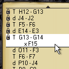 Kliknutím na jakýkoli tah se zobrazí rozložení figurek po tomto tahu. Když v takovém případě táhneš figurkou, můžeš hrát od téhle pozice 'jinou variantu'. Nefunguje to, pokud si nad 'linií uložení' (poznáš podle ikonek zámků). Jestli chceš pohnout linií uložení, prostě vyber tah, kde ji chceš mít, a hru ulož. Po tomto zákroku můžeš provést 'druhou variantu' hry od takového tahu. Zvolený tah a tahy před ním jsou ale stále zamčeny. Zvýrazněný tah se nazývá 'linie bitvy'.
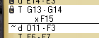 Když začneš nový tah, bude zvýrazněn spolu s liniíí bitvy. Pokud takový tah potvrdíš všechny tahy, co byly pod linií bitvy budou ztraceny. Je to tak trochu jako alternativní budoucnost.
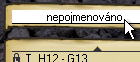 Když klikneš na název bitvy, figurky se vrátí do výchozího rozložení. Jestliže má jméno nalevo od sebe bublinku s íčkem, znamená to, že hra má poznámku. Jestiže není zobrazena, můžeš ji zobrazit pomocí menu 'Možnosti'.
Linky nahoře a dole můžeš použít ke scrollování po Seznamu tahů. Pod spodní linkou je textové pole pro poznámku k určitému tahu (pokud je zapnuto). Do něj můžeš normálně psát.
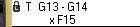 Jak pozorumět řádku s tahem: první znak udává figirku ('d' jako dwarf=trpaslík, 'T' jako Troll, 'R' jako Rock=Kámen), následují soužadnice - výchozí a cílová. Pod tím najdeš vyhozené figurky označené písmenem 'x' (např.: 'xF15'). Od verze 1.0 jsou trpasliší pohyby ještě označeny číslicí tahu. Od verze 1.4 se může pohybovat Kámen, také označen číslicí tahu.
Kopírování/Vkládání v Seznamu tahů
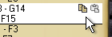
Kopírování/Vkládání se hodí, pokud hraješ pomocí emailu, ICQ, nebo podobně.
Kombinace Ctrl+C zkopíruje tah do schránky.
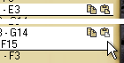
Kombinace Ctrl+V se bude snažit vložit ze schránky tah pod linii bitvy.
To se nemusí povést, pokud není tah přípustný.
Podobně se pracuje pomocí ikonek na linii bitvy.
Ikona vložit má tři rozbrazení: neaktivní (žadný tah hry Thud není ve schránce),
poloaktivní (tah nalezen, nelze však zahrát z této pozice),
nebo aktivní (jestli nejsi v zamčené pozici, můžeš tah zahrát).
Ostatní
Ostatní zahrnuje logo a menu nahoře a URL vespod. Kliknutím na URL se otevře internetový prohlížeč s oficiální stránkou hry Thud. Menu nahoře má čtyři možnosti. Jsou to: 'Soubor', 'Uložit', 'Možnosti' a 'Pomoc'.
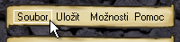Když klikneš na 'Soubor', můžeš zvolit 'nový', 'otevřít', 'uložit jako', nebo 'uložit rozložení'. Pod touto nabídkou je seznam naposledy otevřených souborů (Most Recently Used - MRU) pro rychlé otevření. Funkce položek 'nový', 'otevřít' a 'uložit jako' je obvyklá. 'Uložit rozložení' uloží pozice figurek, ne však předcházející tahy, do souboru. Probíhající hra ale zůstává neporušená, následně ji můžeš uložit normálně. Jestli chceš dohrát rozehranou uloženou hru, normálně ji otevři pomocí nabídky 'Soubor' > 'Nový'.
Soubory jsou většinou uloženy ve složce 'battles' která se nachází ve tvém profilu ve složce aplikace ThudBoard (mrkni na '~/.thudboard/battles'), ale uložit je můžeš kamkoli.
Jestli chceš změnit počet MRU-souborů, proveď úpravu v souboru thudboard.cfg (také v profilu; otevřeš textovým editorem)
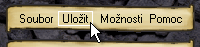Možnost 'Uložit' uloží hru se vším všudy (rozložení, historie, poznámka, ...).
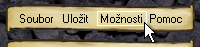Nabídku 'Možnosti' použiješ pro přepínání některých funkcí. 'Souřadnice' přepíná mezi hrací deskou s a bez vypsaných souřadnic na každém poli. 'Zvýrazňování' přepíná rosvícení souřadnic na poli pod myší. 'Score' přepíná mezi zobrazením počtu vyhozených figur a zobrazením počtu zbývajících figur. 'Poznámka' vypíná a zapíná zobrazení textového pole pro poznámku. Všechny možnosti se ti ukládají v profilu a při dalším spuštění aplikace zůstanou tak, jaks je nastavil.
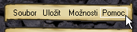Toto menu otevírá dokumentaci, kterou právě čteš.
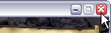Aplikaci ukončíš tak, jak zavíráš jakékoli okno (tj. kliknutí na 'x' ve Windows).